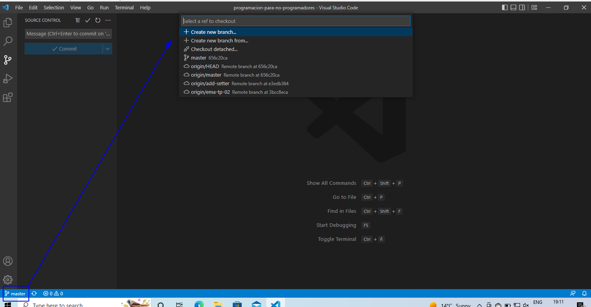
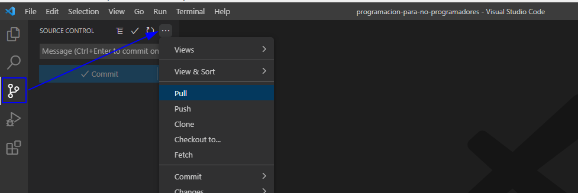
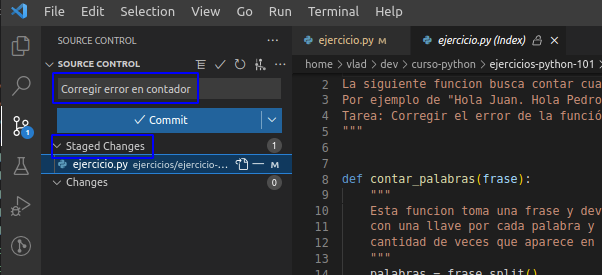
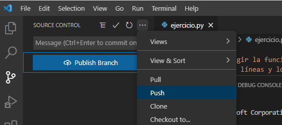
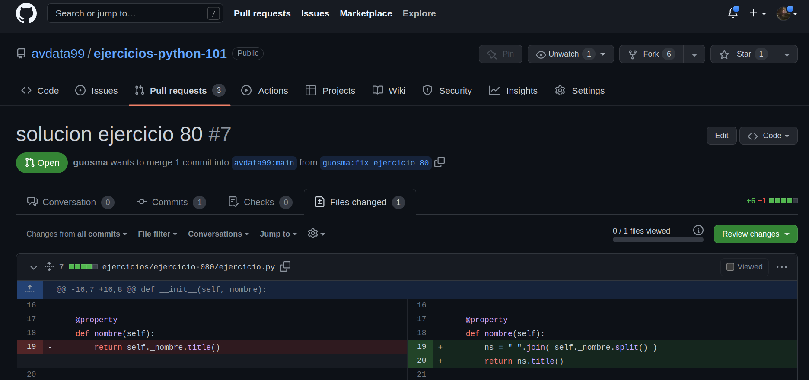

Mi primer PR
Como dijimos anteriormente, Git nos permite tener diferentes ramas de trabajo.
De esta forma, existe una rama principal (llamada main, master o como
cada equipo prefiera) de trabajo donde todos los cambios aceptados se integran
consolidando la versión oficial de tu producto de software.
La forma de enviar tus sugerencias de cambios al equipo es crear una nueva rama de trabajo con tus cambios y solicitar la revisión a otros integrantes del equipo.
Esta solictud es conocida como PR y viene de Pull request. En otras plataformas se le llama MR (por Merge Request).
Pull request paso a paso
Ten en cuenta estos pasos cada vez que quieras proponer cambios en un proyecto de software.
Paso 1: Actualizar tu repositorio
En primer lugar debes asegurarte que tu versión del código esta actualizada para que tus cambios sean propuestos sobre la última versión del código. Comenzar una rama a partir de una versión vieja de la rama principal es un error común.
Antes de comenzar debes asegurarte de estar en la rama principal y de que esta este
actualziada. Esto se consigue con estos dos pasos (asumimos que la rama principal se
llama master pero podría ser otra).
Desde tu terminal esto puede hacerse así:
# posicionarme en la rama principal
git checkout master
# traer (pull) los ultimos cambios
git pull
Desde Visual Studio Code puede hacerse gráficamente.
Checkout (posicionarse en una rama):
Pull (traer los ultimos cambios):
Paso 2: Crear una nueva rama
Crear nueva rama (Create new branch) con un nombre descriptivo de los cambios que pensas implementar.
Desde tu terminal esto puede hacerse con:
# posicionarme en la rama principal
git checkout -b nombre_de_mi_rama
La rama de trabajo actual estará siempre visible en VSC abajo a la izquierda en la pantalla. Es importante saber en cada momento en que rama de trabajo estamos.
Paso 3: Hacer los cambios en el código
Modificar o crear uno o más archivos con los cambios que esperamos proponer. Es conveniente asegurarnos de probar los cambios localmente para estar seguros que funcionan según esperamos.
Paso 4: Agregar los archivos con cambios
Una vez hechos los cambios debemos agregar estos archivos a lo que será nuestro commit. Un commit en Git es un conjunto de cambios en uno o más archivos.
Desde tu terminal esto puede hacerse con:
# agregar los cambios en un archivo a lo que será nuestro commit
git add archivo_que_cambio.py
Todos los archivos agregados con add pasan a estar preparados para hacer tu commit (se llama staged a esta area de preparación). En la parte superior debes colocar un mensaje que describa el cambio que estas haciendo.
Paso 5: Commit
Finalmente con el boton commit se consolida este cambio en la rama actual. Desde tu terminal esto puede hacerse con:
# agregar los cambios en un archivo a lo que será nuestro commit
git commit -m "Descripcion de mi cambio"
Nota importante Este commit solo existe en tu computadora. Al clonar el repositorio de GitHub, creamos un nodo local e independiente de aquel y es allí donde todos estos cambios quedan registrados hasta que finalmente hacemos un push.
Paso 6: Push
En este paso enviamos los cambios que tenemos localmente al repositorio en GitHub. De esta forma otros usuarios podrían descargarse nuestra rama (por ejemplo para colaborar en ella).
Desde tu terminal esto puede hacerse con:
# agregar los cambios en un archivo a lo que será nuestro commit
git push
Este ciclo de hacer cambios (paso 3) hasta el push puede hacerse las veces que sea necesario, incluso despues de creado el PR en el paso siguiente.
Paso 7: Pull Requets
Finalmente desde VSC o desde la página web del repositorio podemos iniciar un PR y asignar uno o más usuarios como revisores.
Es posible que los revisores soliciten nuevos cambios o correcciones. En caso de ser necesario podemos voler a nuestra rama más tarde y actualizar el PR haciendo nuevos commits hasta que finalmente nuestro trabajo quede resuelto.
Tarea
La carpeta ejercicios de este repositorio tiene ya problemas para resolver mediante pull requests.
Se espera un PR para cada ejercicio, por lo tanto cada uno requiere una rama distinta que siempre salga desde master.
Asegurarse de seguir todos los pasos para cada PR.
Hacer un PR con una propuesta de solución para el ejercicio 001 (contenido en este repositorio)
Hacer un PR con una propuesta de solución para el ejercicio 002 (contenido en este repositorio)